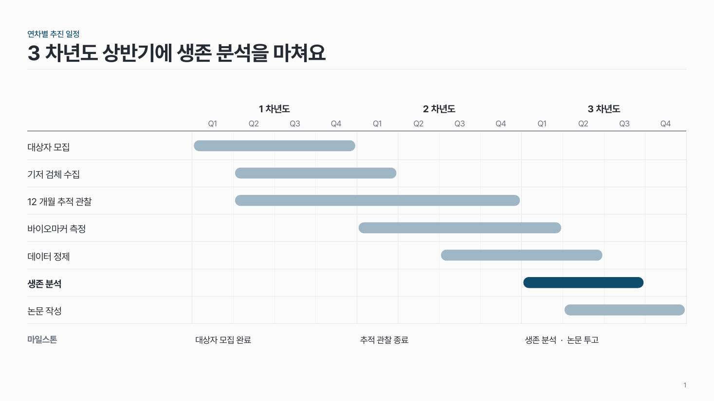
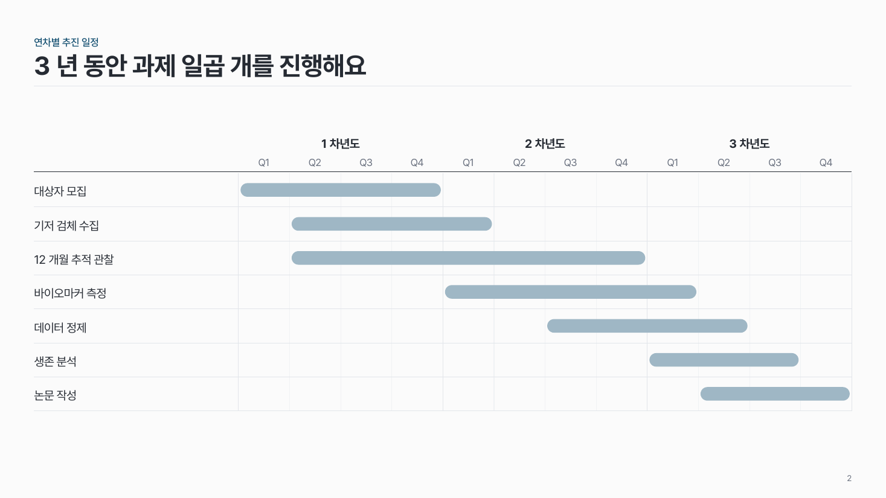

연차별 간트 time-03
위에 연차와 분기 눈금, 왼쪽에 세부 과제, 과제마다 알약 모양 막대로 기간을 그려요.

이 시안
3년 · 과제 7개 · 마일스톤 · 핵심 과제
슬라이드 제목: 3차년도 상반기에 생존 분석을 마쳐요
언제 쓰나
과제 기간이 2–5년이고 세부 과제 여러 개의 시작·끝을 분기 단위로 보여 줄 때요. 과제 계획서의 연차별 추진 일정에 맞아요.
구성
- 위에 연차 칸, 그 아래 분기 눈금 Q1–Q4.
- 왼쪽 열(전체의 25%)에 세부 과제 이름.
- 과제마다 한 줄에 알약 모양 막대로 수행 기간.
- 맨 아래에 연차별 마일스톤 한 줄 (선택).
지킬 것
- 세부 과제는 3–10개.
- 막대 높이는 줄 높이의 40% 안팎, 양 끝은 둥글게.
- 분기 구분선은 옅은 회색, 연차 경계만 조금 진하게.
- 막대는 한 색, 핵심 과제 하나만 진하게.
하지 말 것
- 막대 사이를 화살표로 잇지 않아요.
- 막대마다 다른 색을 쓰지 않아요.
- 막대 안에 설명 문장을 넣지 않아요.
시안 비교
같은 내용을 옵션만 바꿔 그렸어요. 그림을 누르면 크게 보여요.
A3년 · 과제 7개 · 마일스톤 · 핵심 과제
슬라이드 제목: 3차년도 상반기에 생존 분석을 마쳐요

B같은 내용 → 마일스톤 없음 · 강조 없음
슬라이드 제목: 3년 동안 과제 일곱 개를 진행해요